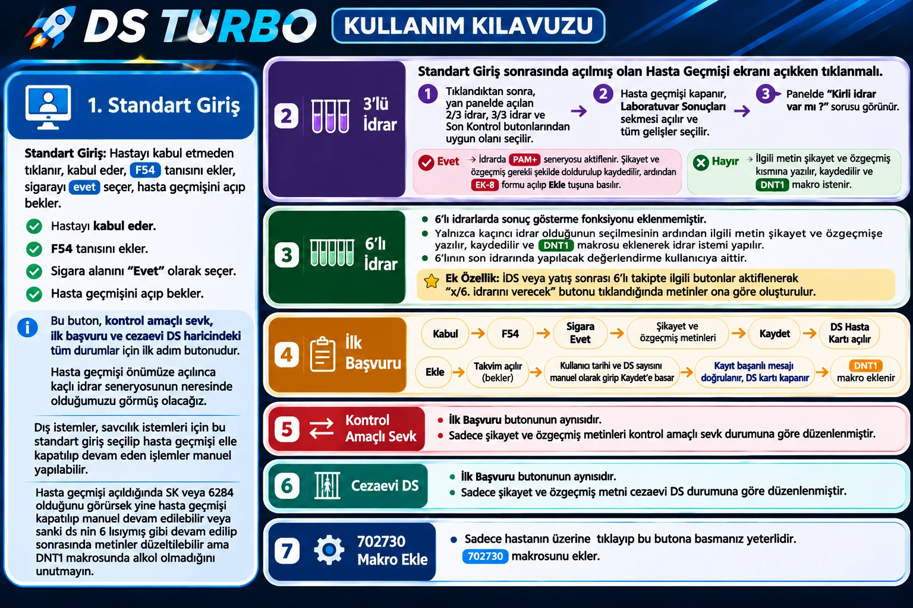

Hastane Dokümanları
Çağrışımlarımızın her daim düzenli olması dileği ile
📘 DS TURBO · Kullanım kılavuzu ve kurulum
DS TURBO nasıl çalıştırılır?
- Yukarıdaki DS TURBO butonundan ZIP dosyasını indir. İçindeki
DS_TURBO_V36.txtdosyasını aç ve kodun tamamını kopyala. - Chrome'da Fonet HBYS hasta ekranını aç.
- Chrome'un sağ üstündeki üç nokta (⋮) → Diğer araçlar → Geliştirici araçları menüsüne gir.
- Console sekmesini aç.
- Kopyaladığın kodu Console'a yapıştır ve Enter tuşuna bas.
- Açılan DS TURBO panelinden uygun işlemi seç; kayıt ve istem sonuçlarını ekrandan doğrula.

🔍 İnfografiği tam boy görüntüleGüvenlik: Console'a yalnızca kaynağını doğruladığın kodu yapıştır. Hasta kayıtlarını ve istemleri işlem sonrasında mutlaka kontrol et.